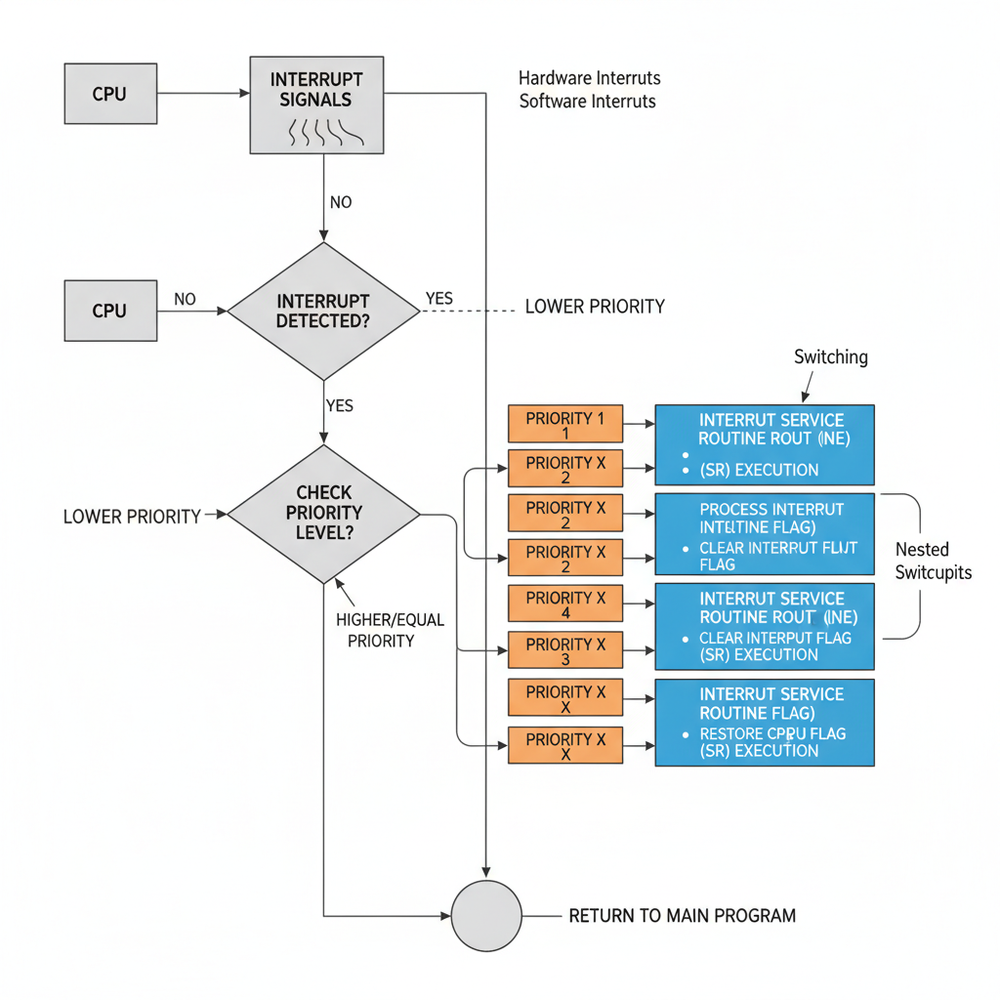

中断机制概述 Interrupt Mechanism Overview
中断 Interrupt
Signal Requesting CPU Attention
请求CPU关注的信号
Signal requesting processor attention
中断优先级
Interrupt Priority
确定服务顺序
Determines service order
服务中断
Service an Interrupt
处理器对中断采取行动
Processor takes action for interrupt
